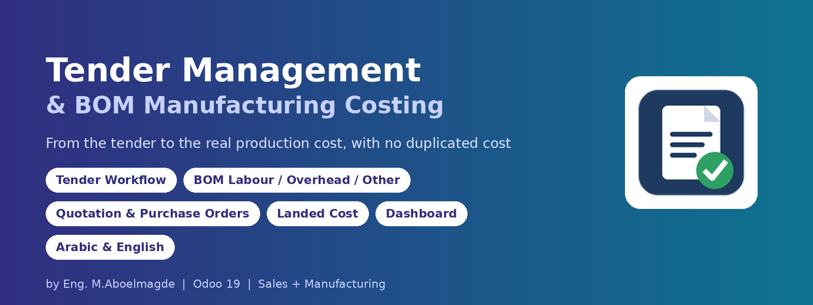
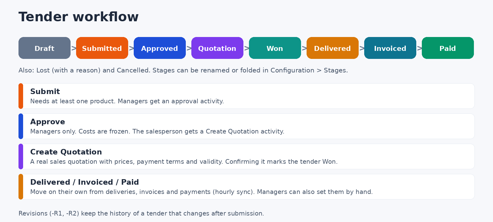
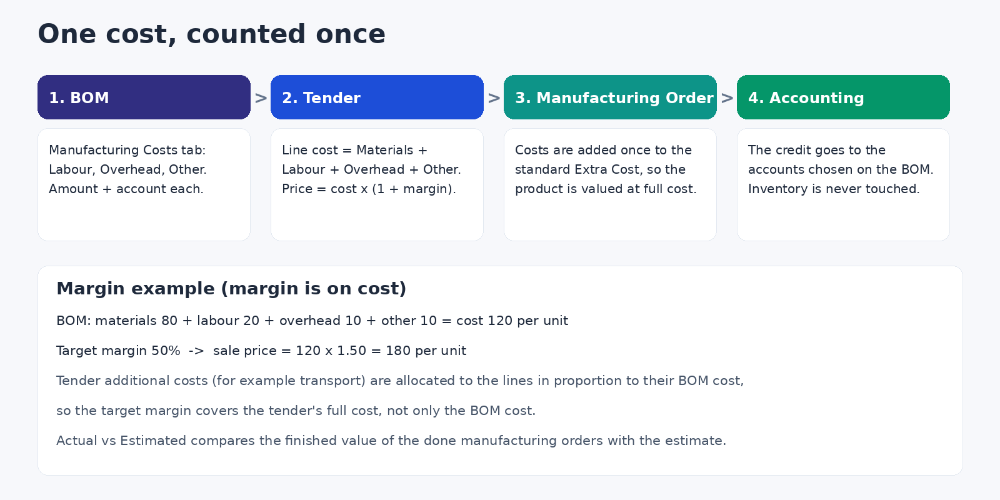
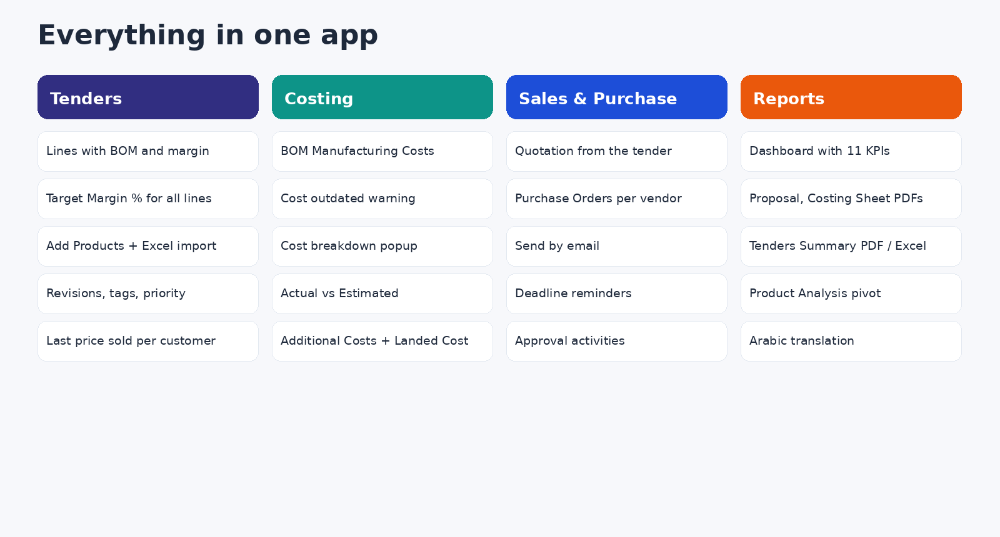
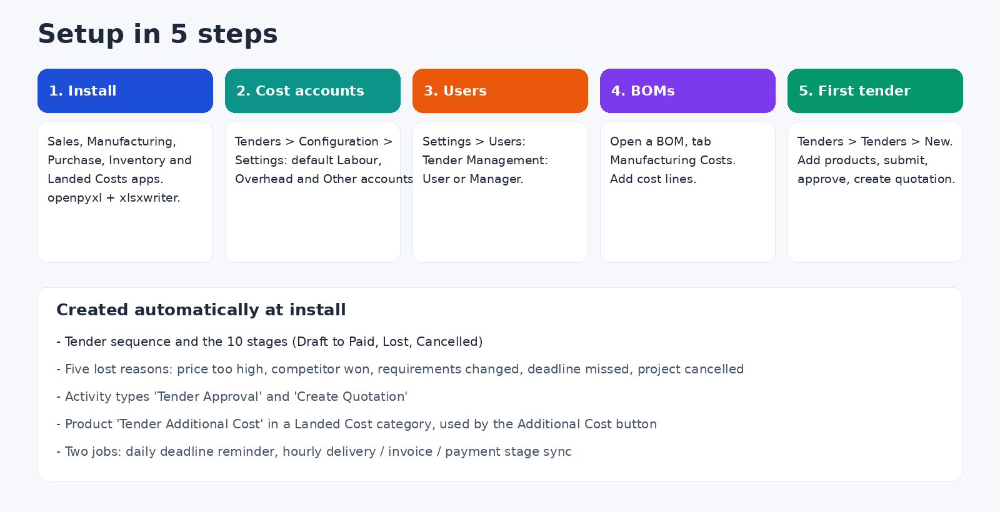

Quote from the real cost, and keep that cost true all the way to the books
For companies that manufacture and sell against tenders. Price a tender from the actual Bill of Materials (materials, labour, overhead and other costs), send the quotation, follow the job through delivery, invoice and payment, and compare the estimate with what production really cost. The manufacturing costs enter the Manufacturing Order and inventory valuation through standard Odoo mechanisms, so nothing is counted twice and no custom accounting is hidden behind it.
Tender workflow

- Every tender has a customer, tender date, deadline, salesperson, tags, priority, payment terms, quotation validity, attachments and notes. Revisions (-R1, -R2) keep the history of a tender that changes.
- Each line has the product, quantity, unit of measure, BOM, cost per unit, total cost, sale price, total sale, profit and margin %.
- Target Margin % in the header prices every line at once, including lines added later. Margin is calculated on cost: cost 120 with 50% gives a sale price of 180.
- Add Products wizard with manual selection, catalog and Excel import. Last Price Sold shows the customer's most recent confirmed price for the product.
- Create Quotation builds a real sales quotation with the tender's prices, payment terms and validity. Confirming the quotation marks the tender Won.
- Delivered, Invoiced and Paid follow the real deliveries, invoices and payments (synced every hour). Mark as Lost asks for a reason, and a dashboard chart shows why tenders are lost.
- Send by Email, approval and quotation activities, deadline reminders and overdue alerts.
BOM manufacturing costing

- New Manufacturing Costs tab on the Bill of Materials: Labour, Overhead and Other lines, each with an amount, an account and an optional description. Total BOM Cost = Materials + Labour + Overhead + Other.
- When a Manufacturing Order is created or confirmed, the BOM costs are added once to the standard Extra Cost, so the finished product is valued at its full production cost.
- When the order is done, the credit of the absorbed cost is moved to the accounts you chose on the BOM. Inventory accounts are never touched. If the automatic entry cannot be posted, the order shows a message and a Post Cost Entry button to retry, and stock valuation is not affected.
- The tender shows a BOM Cost tab with totals per line, a cost breakdown popup, and a warning when a BOM changed after the tender was costed.
- Actual vs Estimated: compares the finished value of completed manufacturing orders with the tender estimate, per product.
Additional costs, purchasing and landed cost
- Additional Costs on the tender (transport, bonds, commissions and similar) stay separate from the BOM costs. They are spread over the lines in proportion to their BOM cost, so the target margin covers the tender's full cost.
- Manager button Additional Cost: turns those costs into a real Odoo Landed Cost on the tender's own done delivery transfers. It checks first that cost lines exist, the manufacturing orders are done, a delivery is done, the invoice is posted and no landed cost exists yet. Computing and validating stay manual in standard Odoo. Split method per cost: Equal, By Quantity, By Current Cost, By Weight or By Volume.
- Manager button Create Purchase Orders: creates purchase orders for the components inside each line's BOM, grouped by vendor.
Dashboard and reports

- Dashboard with 11 KPIs (total, in progress, won, to deliver, to invoice, invoiced unpaid, paid, lost, win rate, expected profit, overdue) and charts: tenders and sale value by stage, sale vs cost for the last 12 months, top customers, lost reasons and upcoming deadlines. Light and dark mode.
- Kanban with every stage always shown, colored status ribbon, and smart buttons that appear only when they have records: BOMs, sales orders, manufacturing orders, deliveries, purchase orders, invoices, payments, landed costs and revisions.
- PDF: Tender Proposal, Costing Sheet, Actual vs Estimated, Tenders Summary and BOM Cost Sheet. Tenders Report wizard with PDF and Excel export, and Product Analysis (pivot, graph, list).
- Arabic translation included.
Configuration guide

Step 1: Install
The module needs the Sales, Manufacturing, Purchase, Inventory and Landed Costs apps, plus the Python libraries openpyxl and xlsxwriter (Excel import and export). Install the libraries in the Python environment that runs Odoo before installing the module. It creates the tender sequence, the stages, lost reasons, activity types, the landed cost product and the two scheduled jobs for you.
Step 2: Default cost accounts
Open Tenders > Configuration > Settings and choose the default Labour, Overhead and Other cost accounts of your company. New BOM cost lines take their account from here and you can still change it line by line. Receivable and payable accounts are not offered, and accounts are never hard-coded.
Step 3: Users and roles
In Settings > Users, open the Access Rights tab and choose one Tender Management role per person: User or Manager. A Manager includes everything a User can do.
| Tenders | Tender User | Tender Manager |
|---|
| Dashboard, tenders list, kanban and reports | Yes | Yes |
| Create and edit tenders, lines, additional costs, attachments, notes | Yes | Yes |
| Add Products (manual, catalog, Excel import), Refresh Costs | Yes | Yes |
| Submit for approval | Yes | Yes |
| Create Quotation, Send by Email, New Revision | Yes | Yes |
| Print reports and export the Tenders Report (PDF / Excel) | Yes | Yes |
| Approve a tender | No | Yes |
| Mark as Won (manually) | No | Yes |
| Mark as Lost, with a reason | No | Yes |
| Cancel a tender | No | Yes |
| Reset to Draft | No | Yes |
| Mark as Delivered, Invoiced or Paid (manually) | No | Yes |
| Create Purchase Orders from the BOM components | No | Yes |
| Additional Cost (create the landed cost) | No | Yes |
| Delete a tender | No | Yes |
| Stages (Configuration) | View | View and edit (rename, fold) |
| Lost Reasons (Configuration) | View | Create, edit, delete |
| Tags (Configuration) | Create, edit | Create, edit, delete |
| Delivered, Invoiced and Paid also move by themselves | Automatic | Automatic |
A tender also becomes Won automatically when its quotation is confirmed, whoever confirms it.
| Manufacturing side | What it means |
|---|
| BOM Manufacturing Costs tab | Tender Users can view it. Manufacturing Managers create and edit the cost lines. Manufacturing Users view them. |
| Manufacturing Order cost lines | System-generated from the BOM. Manufacturing Users can only read them. Tender Managers and Manufacturing Managers have write access for corrections. |
| Post Cost Entry button on the Manufacturing Order | Tender Managers and Manufacturing Managers only. The entry is also posted automatically when the order is done. |
| Cost line accounts | Receivable and payable accounts are refused, and the cost per unit cannot be negative. |
Restricted actions are checked in the server code, not only hidden in the view. Tenders follow multi-company rules.
Step 4: Bills of Materials
Open a BOM and go to the Manufacturing Costs tab. Add the Labour, Overhead and Other lines with their amounts (per unit of the BOM product). Use a product category with Automated inventory valuation so the Manufacturing Order posts its valuation entries; the module then moves the absorbed cost to your BOM accounts.
Step 5: Your first tender
- Go to Tenders > Tenders and click New. The reference is generated automatically.
- Choose the customer and deadline. Add products (each needs a BOM) with Add Products or directly in the lines.
- Set the Target Margin % or edit sale prices. Add tender Additional Costs if any.
- Press Submit. A Manager presses Approve; costs are now frozen.
- Press Create Quotation. When the customer confirms it, the tender becomes Won and follows delivery, invoice and payment.
Technical details
- Odoo 19.0. Depends on base, mail, product, sale, sale_stock, mrp, mrp_account, purchase and stock_landed_costs. Python libraries: openpyxl, xlsxwriter.
- License: Odoo Proprietary License v1.0 (OPL-1).
- PDF reports use Odoo's standard PDF engine (wkhtmltopdf).
- Upgrade scripts are included for earlier versions.
Frequently asked questions
Is the BOM cost counted twice in inventory? No. It is added once to the standard Extra Cost of the Manufacturing Order; the module only moves the resulting credit to your chosen accounts.
A tender line has no cost. The product needs a BOM with components or manufacturing costs. Press Refresh Costs before approval to re-read the BOM; costs are frozen after approval.
Can I use it for tenders of construction projects? It is built for sales and manufacturing tenders based on BOMs, not for contracting projects.
Can I rename the stages? Yes, under Configuration > Stages you can rename or fold them. The workflow itself stays as shown.
Support
Bug-fix updates are included. Installation, configuration and customization support: Eng. M.Aboelmagde (YouTube: Odoo Lab, @odoolab).